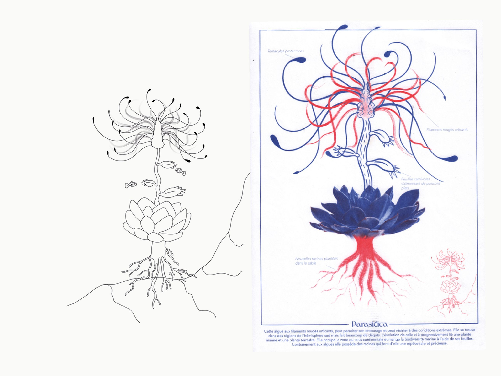

Workshop After Effect avec la motion et designer graphique Mélody Da Fonseca.
Réalisation d'une vidéo de 30 secondes animant un projet de notre choix fait en classe, celui présenté ci-dessous évoque l'imagination d'une flore nouvelle génération hybridée entre photographies et dessins.
